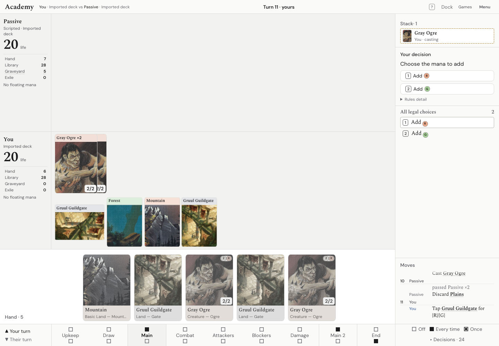
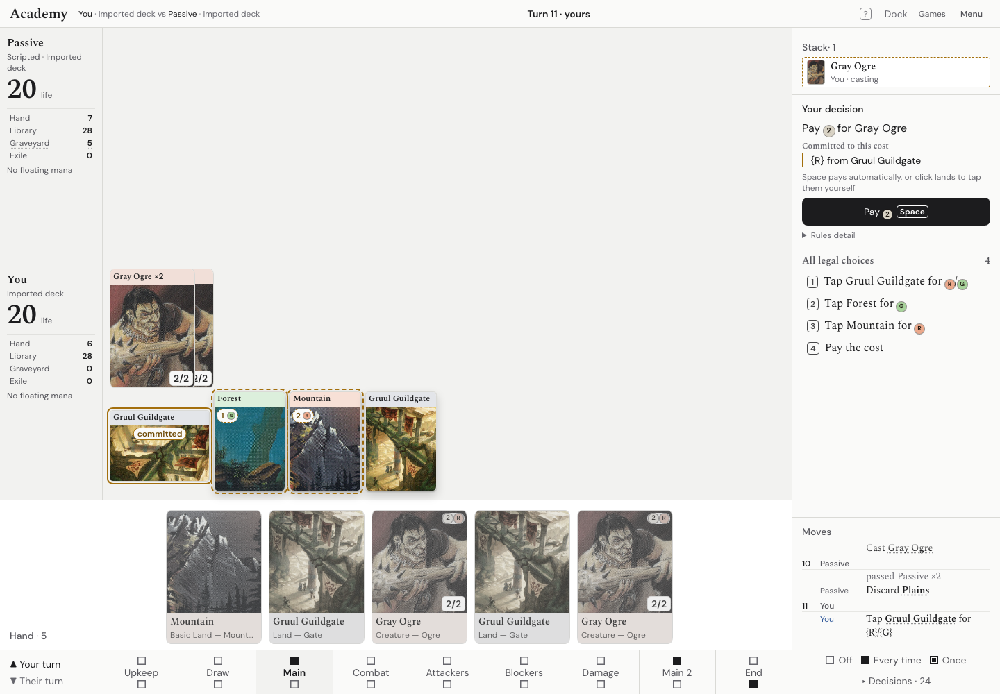

MTG-439 Ship Review — Cast from Dual Lands & Identical Basics Without a Manual Payment Prompt
PR #616 ·
Branch jack/mtg-439-auto-skip-forced-dual-land-mana-payments-under ·
Base 3be5a0cfb2 → HEAD b361663a0b (38 files, +3006 / −372)
1. What ships, in your terms
Under ManaPayment::Manual (Academy's and training's default), a payment stops only when your choices can leave two distinguishable game states — including on the normal Magic turn where you play a land and immediately cast a spell. Simple choice-of-color taps (dual lands, any-color lands, mana dorks/rocks, Great Divide Guide grants) keep one action per ability (no 5× action-space blowup), read Tap <Name> for {G}/{W} or Tap <Name> for any color instead of Activate ability: <Name>, and open Choose the mana to add only when the color pick leads to different outcomes.
Before vs. After — measured in engine (source_taps, Gray Ogre {2}{R}, manual payment, floats off)
| Untapped sources on board | Before (base 3be5a0cfb2) |
After (HEAD) |
|---|---|---|
Gruul Guildgate, Forest, Forest |
Stop: ActivateAbility Guildgate, PayCost |
No prompt casts directly |
Gruul Guildgate, Mountain, Forest (either color pays) |
Stop: Guildgate, PayCost; then color modal Add {R} / Add {G} |
No prompt casts directly |
Gruul Guildgate ×3 |
6 prompts (3 source stops + 3 color modals) | No prompt casts directly |
Mountain ×4 (even if 4th Mountain entered this turn) |
3 stops choosing among identical Mountains | No prompt casts directly |
Gruul Guildgate, Mountain ×2, Forest |
Prompt showed only Guildgate + PayCost; basics were hidden until Guildgate was tapped |
Guildgate (Tap Gruul Guildgate for {R}/{G}) and all 3 basics offered beside PayCost |
Plains ×2 (1 played this turn) + Kyoshi Village for {1}{G} |
Stopped on Village + PayCost, and PayCost over-tapped all 3 lands |
No prompt taps 1 Plains + Village, leaves 1 Plains untapped |
Soulstone Sanctuary (old) + Soulstone Sanctuary (played this turn) for {1} |
Prompt | Prompt preserved (manland summoning sickness matters) |
Real output — Academy live session trace & browser QA (scratch/qa.html)
# Seeded Academy GameSession (managym academy play --opponent passive --seed 11)
# Deck: 14 Kyoshi Village / 10 Plains / 16 Youthful Knight ({1}{W})
CAST turn 7 lands: Village, Plains, Plains, Plains (last entered_this_turn)
STOP PAY_OR_NOT ['Tap Kyoshi Village for {G}/{W}', 'Tap Plains for {W}' x3, 'Pay the cost']
DONE tapped: ['Kyoshi Village', 'Plains'] (stale-land variant, turn 9: identical)
# Clicking 'Tap Kyoshi Village for {G}/{W}' skips the color modal and finishes directly:
# 11/11 payments over the full game had no color modal and no second stop.

Tap Kyoshi Village for {G}/{W}, three Tap Plains for {W}, and Pay the cost. Clicking Village skips the modal and finishes.
{2}{R}): Moves log reads Play Mountain · Cast Gray Ogre with no payment prompt.
Add {R} / Add {G}).
{R}: stops cleanly at Pay {2} with {R} from Gruul Guildgate committed.Real code — unified tap wording & interchangeable-source proof
// managym/src/agent/ability_description.rs:1285-1323
pub(crate) fn mana_choices_description(choices: &[Mana]) -> String {
let Some(first) = choices.first() else {
return "mana".into();
};
if choices.len() == 1 {
return mana_description(first);
}
let uniform = choices.iter().all(|mana| {
mana.total() == first.total()
&& mana.classes().iter().map(|(class, _)| class)
.eq(first.classes().iter().map(|(class, _)| class))
});
if !uniform {
return choices.iter().map(mana_description).collect::<Vec<_>>().join("/");
}
let mut text = if first.total() == 1 {
let symbols: Vec<_> = choices.iter().map(mana_symbols).collect();
if symbols.len() == 5
&& ["{W}", "{U}", "{B}", "{R}", "{G}"].iter().all(|pip| symbols.iter().any(|s| s == pip))
{
"any color".to_string()
} else {
symbols.join("/")
}
} else {
format!("{} mana", first.total())
};
describe_mana_classes(first, &mut text);
text
}
// managym/src/flow/mana/interchangeable.rs:21-78
pub(super) fn determined_source_counts<'a>(
&self,
model: &PaymentModel,
pool: &Mana,
obligations: &[Obligation],
needed: usize,
taps: Vec<UsefulTap<'a>>,
) -> Option<Vec<UsefulTap<'a>>> {
if self.state.cast_caller.is_some() { return None; }
let _scan = self.board_scan();
let tap_count = taps.len();
let mut classes: Vec<Vec<UsefulTap>> = Vec::new();
let mut representatives: Vec<usize> = Vec::new();
for tap in taps {
if self.unbound_mana_source(tap.source) {
if let Some(&index) = representatives
.iter()
.find(|&&index| self.same_mana_permanent(classes[index][0].source, tap.source))
{
classes[index].push(tap);
continue;
}
representatives.push(classes.len());
}
classes.push(vec![tap]);
}
if classes.len() == tap_count { return None; }
let mut mandatory = Vec::new();
let mut optional = None;
for class in classes {
if model.payable_after_tap(class[0].source.permanent, pool.clone(), obligations.to_vec()) {
if optional.replace(class).is_some() { return None; }
} else {
mandatory.extend(class);
}
}
let count = needed.checked_sub(mandatory.len())?;
let optional = optional?;
if count == 0 || optional.len() <= count { return None; }
mandatory.extend_from_slice(&optional[..count]);
mandatory.sort_unstable_by_key(|tap| tap.source.permanent);
Some(mandatory)
}
2. How to try it
Start Academy with manual mana payment (default) and import a deck with Kyoshi Village, Plains, and Youthful Knight ({1}{W}):
./scripts/play
- Exact dual cast: leave
Kyoshi Village+ 1Plainsuntapped, castYouthful Knight→ goes straight onto the stack with no payment prompt. - Real stop + same-turn basic: with
Kyoshi Village+ 2Plains, play a 3rdPlainsfor turn and castYouthful Knight→ All legal choices showsTap Kyoshi Village for {G}/{W}, threeTap Plains for {W}, andPay the cost. ClickTap Kyoshi Village for {G}/{W}→ no color modal, finishes immediately with 2 Plains left untapped. - Engine & Academy targeted suites (already passing locally):
cd managym && CARGO_BUILD_JOBS=2 cargo nextest run --profile ci --test-threads 2 -E 'binary(source_taps)' uv run --extra dev pytest tests/academy/test_dual_land_payment.py tests/academy/test_payment_preview.py tests/env/test_skip_forced_decisions.py -q
3. What is likeliest to surprise you
search total)
Per steer 5d5904ae(b), the build applied the interchangeable-source skip uniformly to basics-only boards (Mountain ×4 for {2}{R}, Plains ×3 for {W}{W}) rather than limiting it to boards with a dual land. That dropped Engine Budget's benchmark steps from 118,559 to 114,861 (−3,698 decisions, −3.1%) — and broke tests/replays/parity fixtures that relied on identical basics prompting, plus pushed Engine Budget search total from 112.505 s to 127.642 s (+13.5%, over the +10% ceiling of 123.756 s). See Findings below for exact CI logs.
In Pass 4, interchangeable.rs relaxed summoning_sick on plain non-creature, non-animating lands (and entered_this_turn when the permanent has no power_up ability) because raw summoning_sick defeated Pass 2 on nearly every real "play a land, then cast" turn. Creatures, non-lands, power_up permanents, and self-animating manlands (Soulstone Sanctuary, Treetop Village) still compare sickness. Future-Standard caveat: a future card that targets "a land that entered this turn" or animates another land without haste will need that check re-enabled.
TurnFaceUp, Ward) now match basics and omit simple choice taps when can_pay
Pass 4 deleted resolution_mana_abilities so Decision::Payment omits simple dual taps whenever can_pay is true, waterbend is 0, and floats are off — matching how basics already behave (e.g. Ward {2} with Kyoshi Village + Sol Ring offers [PayCost, Decline], just like Plains + Sol Ring). Passed over: extending Decision::Payment to offer per-source manual taps for both basics and duals.
- Restricted simple taps (
Jasmine Dragon Tea Shop) reuseManaRestriction::describe()verbatim rather than shortening to(Ally only). - LLM text observation (
manabot/semantic/text_observation.py:658) stays"Activate ability of <Name>"(frozen prompt wording) instead of adopting nativeaction.description. - Non-simple mana abilities (Treasure, pain lands, filter lands, tap-N, once-per-turn) stay
"Activate ability: <Name>"so extra costs/side effects remain visibly distinct from free taps. PayCoststays beside individual taps at every real stop as the one-click automatic finish.
4. Findings — CI failures on PR #616 and items left outside the PR
Real CI output from PR #616 (run 45602673204 — gate has not run yet)
# Engine Budget (job 139165429698)
| Check | Reference | Candidate | Result |
| reference steps count | 118559 | 118559 | ok |
| candidate steps count | 118559 | 114861 | differs (-3,698 / -3.1%) |
| candidate steps digest | 10601622128491155944 | 15376870806868576179 | differs |
| candidate search seed 1..3 | ... | ... | differs (x3) |
| search worst reply | 2.724 s | 2.796 s | ok |
| search total | 112.505 s | 127.642 s | over 123.756 s (+10%) |
| steps throughput | 24213.0/s | 23298.4/s | ok |
# Rust Tests (job 139165429114 — 3 failures in managym-cards::cards)
FAILED ori::pyromancers_goggles_does_not_copy_other_spells_or_without_its_mana (exact 2-land cast skipped)
FAILED tla::zhao_taps_nonbasic_lands_and_makes_them_mountains_once_he_conquers (interchangeable/exact skip)
FAILED woe::archons_glory_gains_flying_and_lifelink_only_when_bargained (comment: "Two [Plains], so the mana is a choice")
# Integration: model (10), training (11), experiment (4) — skipped basic-land stops shifted steps/replays
FAILED tests/semantic/test_text_observation.py::test_manual_mana_sources_reach_text_commands_and_policy_input (Gray Ogre cast skipped)
FAILED tests/semantic/test_text_observation.py::test_a_chosen_sacrifice_is_committed_once_and_not_already_paid
FAILED tests/env/test_game_snapshot.py (x2), tests/model/test_input_scales.py (x1), tests/sim/test_heuristic.py (x1), ...
FAILED tests/training/test_snapshot_rollouts.py (x11: PyAgentError: no active chooser)
FAILED tests/verify/test_shared_effect_transport.py (x4: Action index 10/15 out of bounds: 2)
# Academy Integration (1) & Academy UI (1)
FAILED tests/academy/test_authored_match_parity.py::test_checked_authored_match_parity_receipt
expected_revision 172 -> 168, 173 -> 169; live from_revision=82 command rejected
FAILED Academy UI Playwright E2E: Error: Tap Llanowar Elves for {G} (expect(received).toBeGreaterThanOrEqual(expected))
| Finding | Detail | Proposal | Why |
|---|---|---|---|
A. 7 red CI jobs + search total +13.5% |
3 Rust card tests, 25 Python integration tests, authored match parity receipt, 1 Academy UI E2E test, and Engine Budget (search total 127.642 s vs 123.756 s cap, +13.5%). |
Fix here | Required before landing. Needs real investigation of why search total jumped +13.5% (not just adopting baseline) plus updating tests/receipts for intentionally skipped basic/exact stops. |
B. Academy Moves log raw {G}/{W} braces & missing chosen color |
Moves log prints raw offer text (Tap Kyoshi Village for {G}/{W} with literal braces) and records the offer rather than the resolved color produced. Pre-existing for basics (Tap Plains for {W}) too. |
Its own Task | Separate UI symbol-rendering and history-capture change across all mana taps; clean standalone Academy polish. |
| C. Open multi-source Guildgate color modal | With 2 Guildgates + Forest + Mountain for {2}{R}, tapping a Guildgate asks Add {R} / Add {G} because remaining costs {2} vs {1}{R} differ, even though both can reach the same final boards (QA item 1). |
Drop | Faithful to CR 605.3b (color is chosen when the mana ability resolves). Deferring color choice would be a different rules-UX design, not a bug. |
D. Autotapper choice-source lookahead & Decision::ManaChoice origin flag |
autotapper.rs's hand-followup search doesn't score choice sources (automatic_choice_taps already prefers basics and prunes surplus taps); equivalent_mana_choices re-derives simple-tap origin by matching mana_choices(). |
Drop | No user-facing defect; revisit only if suboptimal auto-taps of choice sources show up in play. |
| E. Small wording details | Long ManaRestriction::describe() on Jasmine Dragon Tea Shop; LLM text keeping "Activate ability of <Name>"; Treasure/pain/filter lands keeping "Activate ability: <Name>". |
Drop (or Fix here) | Too small for separate Tasks; either keep as built or tweak directly here. |
5. Questions for you
Reply with numbers + letters (for example, 1a 2a 3a 4a 5a), or say what to change.
- Pass 2 interchangeable-source skip on basics-only boards + CI fallout (Finding A):
- Plain lands played this turn treated as interchangeable with earlier copies:
-
Resolution payments (
TurnFaceUp,Ward) with spare dual lands: - Wording details (Finding E):
- Outside-PR findings (Findings B–D):